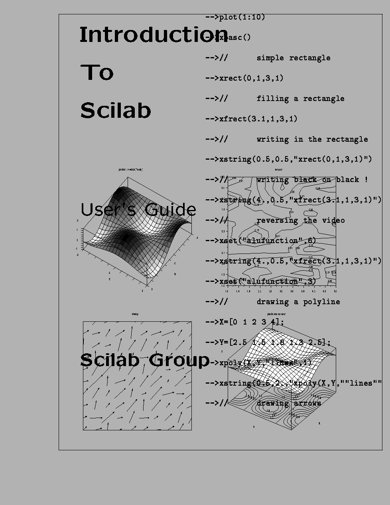

INTRODUCTION
TO
SCILAB
Scilab Group
INRIA Meta2 Project/ENPC Cergrene
INRIA - Unité de recherche de Rocquencourt - Projet Meta2
Domaine de Voluceau - Rocquencourt - B.P. 105 - 78153 Le Chesnay Cedex (France)
E-mail : scilab@inria.fr
Home page : http://www-rocq.inria.fr/scilab